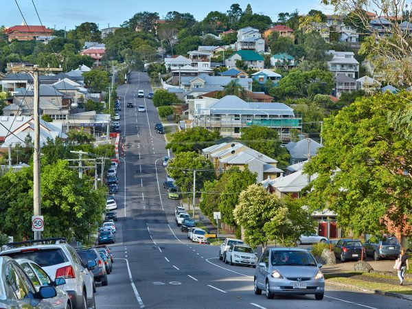
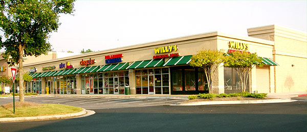
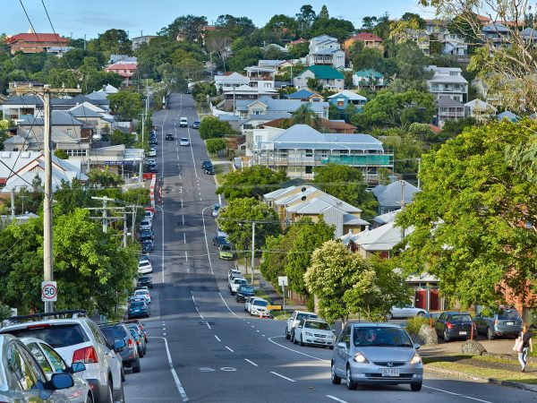
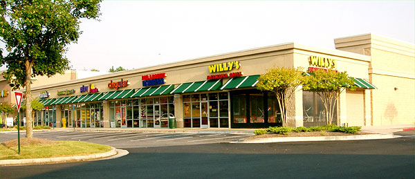

Teaching Point:
Today we will review what makes an Community and Suburban Community.
Suburban Communities
Suburban Communities are the middle kind of community. Urban Communities are very crowded. Rural Communities have almost no people. Suburban Communities are in the middle. They have some people, but not too many. We live in a Suburban Community. Most Suburban Communities are right next to Urban Communities. One thing that we see a lot in Suburban Communities is a lot of houses that look the same. There are houses on some streets and stores on others. What are some of the things that we have in our Suburban Community that make it special?
 



Today's Assignment
Make a Suburban Communities poster in Kid Pix using stamps from the City and Nature Menus. Use the T-Tool to write 1 or 2 things that you know about Suburban Communties.
Back to our Home Page